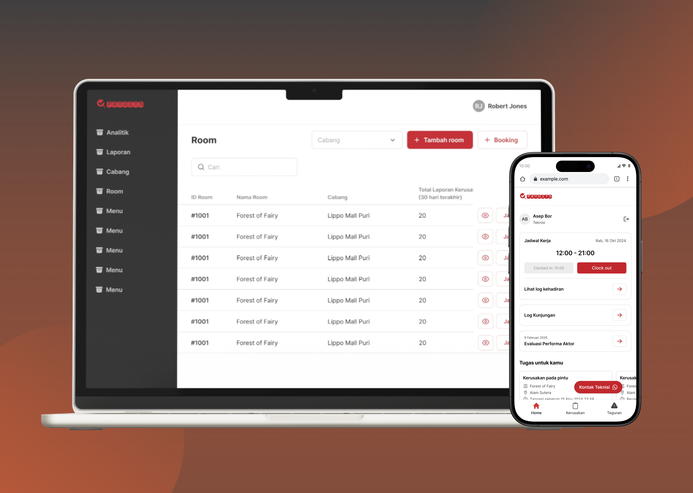

Project Overview
Pandora Experience Management Dashboard (Pandit) (2025 - 2026)
Pandit is a Pandora Experience management dashboard designed to centralize various operational activities, allowing internal staff to manage and monitor their work through a more structured and intuitive interface.
Role
UI/UX Designer
Platform
Desktop, Mobile
Tool
Figma

Pandit Dashboard
Problem
Pandit Dashboard is used by admins to manage various operational activities across Pandora Experience, including game room management, booking, financial operations, business process tracking, actor performance management, and more. With each activity involving different types of information and workflows, admins need a structured and intuitive system that makes it easier for them to access, organize, and monitor their day-to-day operations.
What did I do?
- Research and Analysis: As this was my first project at the company, I started by understanding the existing user flow and how the system was used while also reviewing the existing mockups to understand the design elements and identify areas for improvement.
- Requirements Gathering : After analyzing the existing flow, I gathered and redefined the requirements from the ground up to regain a clearer understanding of user needs and the improvements needed in the new flow
- Wireframing: I created simple wireframes to help me in mapping out the new user flow before developing the high-fidelity mockup.
- High-fidelity Design From the wireframes, I started to develop the final mockup design that is more engaging and intuitive while staying consistent with the brand guidelines.
Solution
I continued to use and follow the existing UI elements and design patterns to maintain consistency with the established brand guidelines, which helped me design and improve Pandit Dashboard into a more structured and intuitive platform for admins to access information, manage tasks, and monitor ongoing operations.
Final Design